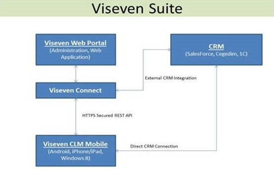

Что собой представляет Viseven CLM?
Viseven CLM — инструмент, разработанный специально для фармацевтических компаний, который помогает с лёгкостью администрировать и управлять командой торговых представителей. Также Вы можете использовать свои собственные системы CRM через наш защищённый API Viseven Connect. Он состоит из Viseven Analytics Portal и Viseven Mobile App.
Viseven CLM является основным приложением для торгового представителя для контроля и управления его визитами на портативных мобильных устройствах, гео-позиционирования и создания своего маршрута, цифровой контент (презентации), авто-синхронизация с Analytics Portal, сбора KPI, а также многое другое. Одними из ключевых особенностей является фотоотчеты и организации заказов.
Viseven Mobile App поставляется в виде клиентского приложения для IOS, Android и Windows Phone 8 мобильных платформ.
Viseven Analytics Portal это “облачная” система для администрации Viseven устройств CLM.
Viseven Web Portal имеет модульную систему и, он может быть настроен в зависимости от того, какая функциональность Вам нужна для работы. Более подробная информация описана в Части 3 данного руководства.
